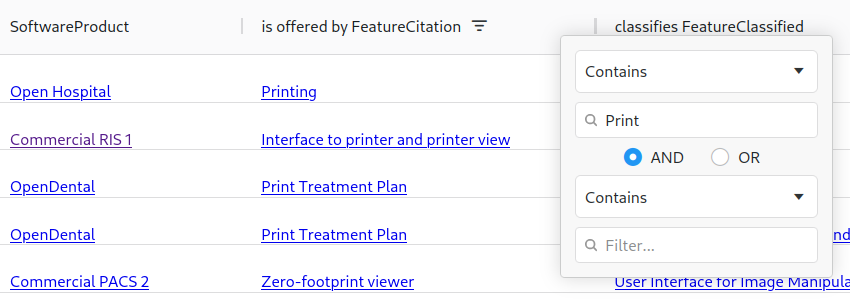

What is HITO?
HITO contains data on concepts that can be used to describe application software products (e.g., application system types, functions, roles, outcome criteria, …). You can find these concepts on the diagram. For a given concept, its datasets describe instances of this concept. For some concepts, such as "roles" (in the diagram as "UserGroup"), different terms are available. There are colloquial terms ("folks's terms", highlighted green) and terms from terminologies ("terminology items"), which are also related to each other. In HITO, for example, the colloquial term "Laboratory Manager" has a classifying relationship with the term "Laboratory technician occupation". The term "Laboratory technician occupation" can be related to other colloquial terms. The term "Laboratory technician occupation" is taken from the terminology "SNOMED CT User Group Catalogue"; this terminology is an instance of the term "terminologies".
Moreover, HITO contains further relationships between concepts, such as the relationship "evaluates" between the concepts "study" and "application software product". One instance of this relationship describes, for example, that the study entitled "The Influence that Electronic Prescribing ..." evalutes the application software product "Medicator".
Examples
- Which studies report on the usage of a specific application software product ASP?
- Is ASP suitable for supporting work in organizational unit U?
- Is ASP suitable for supporting work of specific roles, functions or features?
- What outcome criteria belong to a particular outcome criteria catalog (OCC)?
- Which features support a specific information processing function (IPF)?
- For which application software products do we have information regarding their fulfillment of a specific outcome criterion (OC)?
- What application software products are suitable for implementing a specific application system type (AST)?
How does this search work?
Such questions involve complex relationships between two concepts. Let's assume you need application software for a specific professional group in a hospital, i.e., a
specific role R. Then you could ask the question, "what studies report on application software products suitable for supporting work of various roles?". This is about the
relationship between the concepts "studies" and "roles". To find instances for this relationship first left-click to the concept "studies" in the diagram. If you are
interested in colloquial terms for roles, you then right-click to the "folks' term" concept related to "roles"; if you are interested in terms from terminologies
right-click to "terminologie items" nearby.
In this case, HITO shows you two connection paths between the clicked concepts in different colors. Only paths are shown, for
which there is data on instances of these paths in HITO. In our example, one of these paths includes the concept "application software products", the other does not. If you
click e.g., the path via "application software products", a table with the instances of this path is displayed. In this case, the table contains, for example, the
information that in the study "The Influence that Electronic Prescribing ..." the application software product "Medicator" was evaluated and that this product can be used
by people with the role colloquially referred to as "Doctor".

You can also see that "Doctor" was assigned to "Physician occupation" , an item of a terminology. If several
rows are displayed in the results table, you can set filters in the table header to find the data you need. Just give it a try for some of the questions mentioned above. We
hope you find HITO helpful.